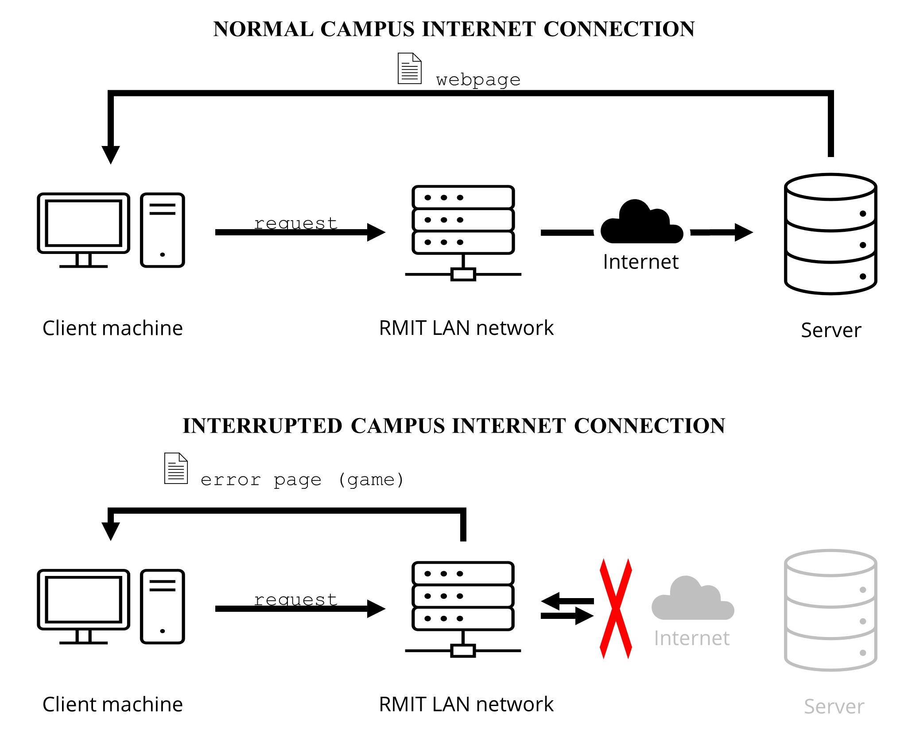
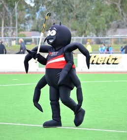
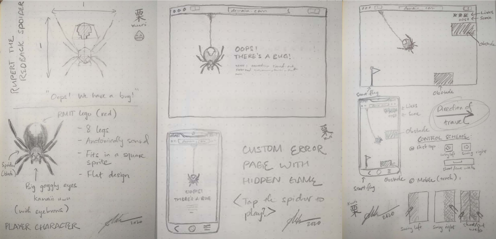

Project Idea: JavaScript game for RMIT wireless network
The Idea
Overview
A simple HTML game loaded onto the user’s device whenever there is an internet connection issue on RMIT Saigon South (SGS) campus network as a replacement for the default connection timed out error page displayed on the user’s web browser. It would be a simple and addictive retro/arcade game intended as a distraction for the users to ease the network traffic and raise awareness about RMIT SGS campus network issue.
Motivation
The internet connection at RMIT University Vietnam SGS Campus has frequently been an issue among staffs and students, and more so during the recent months of Semester 3 of 2020. This is evidenced on the RMIT Confessions Facebook page as a quick search for posts containing the word “wifi” shows a lot of complaints about the slow network connection at SGS campus (see Appendix A) that appears to coincide with the student influx in Semester 3 of each year. Furthermore, in a recent Facebook post on November 28th, 2020, RMIT University Vietnam wrote: “Internet usage at SGS campus has recently been unstable due to the overuse of streaming platforms for music, movies, YouTube, Facebook and other services not directly related to academic needs. This has been severely impacting the digital experience of our community…”[1] This issue is undeniably a controversial topic of discussion recognized by both the faculties and students. Although we have yet to find an effective solution for this problem, my idea would work as a short-term solution to get the matter more recognition, and in the long term to provide our campus community with a geeky insider only “easter egg” campus feature.
Description
The local wireless network at RMIT SGS would send a custom error page containing the error message and a HTML game to the user’s browser whenever a connection timed out error occurs. This concept is similar in idea to the Dinosaur Game developed by Google for their Chrome browser[2], but this would instead be implemented on a network-wide system, not just on the local machine. The process is visually described in Fig 1 shown below (heavily simplified for brevity):
 Fig 1. Internet access at RMIT
In the game, the player controls RMIT’s mascot – Rupert the Redback spider (Fig 2) shooting his spider web at the ceiling to swing from left to right while avoiding dangerous obstacles. The objective is to travel as furthest away from the starting point as possible. It would feature a lives system: Rupert has three lives, each time he hits the ceiling, the floor, or and obstacle, he would lose one. The game ends when Rupert has no lives left and the score is then reported to the player based on the distance travelled (Fig 3). The obstacles are randomly generated indefinitely until the game ends. To further engage the player, achievements would be given every 500 meters travelled, and the score would be saved into a scoreboard on RMIT network so that students can compete with each other for highscore.
The game would feature a flat design so that the RMIT Logo can be easily incorporated into the character design (Fig 3). Thus, the physics system will be modeled after real-life physics instead of the arcade-style physics usually implemented in games with pixel art sprites. For this task, the Phaser game framework is the perfect tool as it also features an accurate real-life physics model (See Tools and Technologies).

Fig 2. Rupert the Redback spider
The page should be compatible with both mobile and desktop platforms. Thus, the game must be responsive to different screen sizes and must feature keyboard, mouse, and touchscreen input for consistent and optimal user experience across devices. For that reason, the control must be simple and intuitive for mobile compatibility.
 Fig 3. Preliminary concept sketches
At the moment, I have come up with two candidate control schemes:
- Control scheme 1 (Fig 3):
- On desktop devices: The player controls Rupert by pressing the left and right arrow key to swing left and right, respectively. The spacebar is used for shooting and cutting the spider web.
- On mobile devices: The left and right side of the screen would be used to control Rupert’s direction of swinging. Pressing both sides simultaneously would be used for shooting and cutting the spider web.
- Control scheme 2:
- On desktop devices: A constant wind force would blow Rupert from left to right, and the player only use the spacebar or click on the screen to shoot and cut the spider web.
- On mobile devices: The mechanism is similar to that on the desktop except pressing anywhere on the screen would be used in place of the spacebar/mouse.
- Extra feature: The wind strength will be increased incrementally every 500 meters travelled for scaled difficulty.
Tools and Technologies
- Game engine: Phaser. Phaser a popular and easy-to-learn open-source 2D HTML5 game framework actively developed and maintained by Photon Storm[3] on GitHub (https://github.com/photonstorm/phaser).
- Sprites and other arts: Aseprite for pixel arts, Photoshop, Illustrator, or other open-source equivalents such as Gimp and Inkscape for more complex raster and vector photo editing capabilities.
- Sound design: Audacity for rudimentary audio editing and Studio One for production-quality audio engineering.
- Version control: Git with repository hosted on GitHub.
- Permission to access RMIT University Vietnam SGS Campus wireless network hardware. This would be the hardest part of this project due to strict network authorization at RMIT SGS campus.
Skills required
For this project, the minimum requirement is a basic understanding of web development, including basic knowledge of HTML/CSS and intermediate proficiency in JavaScript. Some familiarity with game development concepts and object-oriented programming is also beneficial, as this game would heavily utilize the Phaser game development framework. Since this project uses GitHub for version control, beginner to intermediate experience in using the git command line tools or other equivalent graphical interfaces is important for effective collaboration between team members. Furthermore, basic image and audio editing skills would also aid in the making of the game assets using dedicated software mentioned above.
For implementation on RMIT SGS wireless network, my preliminary research shows that some knowledge in network administration is also necessary. However, permission to access and modify the campus network behavior is still a major challenge that is heavily dependent on RMIT leadership’s decision.
Outcome
If successfully implemented on RMIT SGS network, this idea would serve as a public software artefact made by RMIT students to celebrate our community’s talent and creativity – similar in function to the decorative LED sign conceptualized by RMIT students and installed on the fourth floor of Academic Building 2 SGS campus. Though it is not the direct solution to the network connection issue at the campus, it would gather more attention to the problem and contribute to a more positive atmosphere in the discourse between all parties involved.
Feedback
Over the past weeks, I have received many constructive feedbacks from my fellow students and from Dr. Duy Dang Pham Thien. I would like to express my gratitude to everyone who has spent their valuable time to provide me with their comments.
Via the feedback process, I have been able to determine that the major hurdle for my project is permission from RMIT. However, the response toward my idea was generally very positive, and my team members all agreed that my idea might have a positive impact on the community by raising more awareness about the currently pervasive wi-fi issue at RMIT SGS campus. Moreover, thanks to recommendations from Dr. Duy Pham and many talented classmates, I have been able to find the resources and tutorials needed to implement the project and have came up with a rough plan on how my team would develop a demonstrative artefact for Assignment 3 of Introduction to Information Technology.
On the other hand, I also realized that my idea still needs further input and would be best refined under a team effort with contribution from my team members. The game concept is currently not finalized and might need to be changed to be more engaging for the player. To achieve that, for Assignment 3, my team would need other students’ help to playtest the game and collect further data and feedback.
I believe that as a community, with the right resources and mindset, we can bring this project to life at RMIT and make a positive impact on our campus while commemorating our hard work and creativity.
References
- RMIT University Vietnam, "Solution for the wi-fi issue at SGS Campus," https://www.facebook.com/RMITUniversityVietnam/photos/a.680416032023173/3688582664539813/, Ed., ed, 2020.
- A. Roshan. "Google Easter Eggs : 15+ Best Google Easter Eggs & Google Tricks 2017." https://web.archive.org/web/20170805055813/http://feedsyouneed.com/google-easter-eggs-google-tricks/ (accessed December 4th, 2020).
- R. P. S. Davey. "Phaser - HTML5 Game Framework." https://github.com/photonstorm/phaser/tree/v3.24.1 (accessed December 2nd, 2020).
Appendix A
Some RMIT Confessions Facebook posts regarding the wi-fi issue at RMIT SGS Campus
On November 16th, 2020, an anonymous user wrote:
“Trường trả tiền 4G cho em được không ạ? Wifi nát quá :(((“
Translation: I wish the school would pay for my 4G data plan. The campus wi-fi is very bad.
Source (accessed on December 7th, 2020).
On November 12th, 2020, an anonymous user wrote:
“SG
Mọi người có bao giờ phải dùng 4G trong chính ngôi nhà thương yêu gần chục củ một tháng với full wifi chưa ạ?
Vâng đó là cảm giác của em khi ở ktx Rmit, em vừa dọn vào mà vụ wifi làm em chán quá chán.
Ừ thì full wifi nhưng không vào được là thế nào ?!
ASM thì đang cao điểm mà wifi thế này có chết không cơ chứ, không chỉ ktx mà wifi trường ở đâu cũng yếu ý :(((
Mong trường sớm khắc phục, chứ nhiều bạn ktx cũng như em muốn dọn ra lắm rồi ạ :)))”
Translation:
Saigon,
Have you ever had to use cellular data in our dormitory that costs close to ten million (VND) a month including the internet bill? Yes, this is the issue I am having at RMIT dormitory and it is very disappointing. The wi-fi signal is strong but the connection is unstable. Why is this the case? I need to do my assignments but the weak connection across campus is a major hindrance. I hope our school will resolve this issue soon, as many of us living in the dormitory is considering moving out because of the frustration.
Source (accessed on December 7th, 2020).
On October 30th, 2014, an anonymous user wrote:
“SG
Sao wifi trường mình mấy bữa nay củ chuối thế nhỉ
Nghe IT bảo nâng cấp công nghệ mới nhất rồi mà wifi load siêu chậm...”
Translation:
Saigon,
Why is the school wi-fi so awful over the past days? The IT department said that they have upgraded the system with the newest technology but the connection is still very slow.
Source (accessed on December 8th, 2020).
On August 21st, 2013, an anonymous user wrote:
“[SG] mọi người cho em hỏi wifi trường mình dạo này sao chậm thế nhỉ? do bảo trì hay do trường hạ băng thông xuống vậy?”
Translation:
Saigon,
Why is the school wi-fi so slow recently? Is it because of technical maintenance or did our school lower the bandwidth?
Source (accessed on December 8th, 2020).

Author
Michael Tuong Minh Vo
I'm currently pursuing a Bachelor degree in Information Technology at RMIT University Vietnam (Student ID: S-3877562)
Contact me via my email